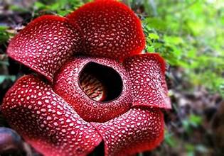
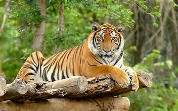

Flora Khas Bengkulu
Provinsi Bengkulu terkenal dengan kekayaan flora yang unik dan endemik. Salah satu flora yang paling ikonik adalah bunga Rafflesia arnoldii, yang dikenal sebagai bunga terbesar di dunia. Bunga ini dapat ditemukan di kawasan hutan lindung, terutama di Kabupaten Kepahiang dan Bengkulu Utara.
Selain itu, Bengkulu juga memiliki tanaman lain yang penting secara ekologis, seperti:
- Amorphophallus titanum: Bunga bangkai raksasa yang menjadi daya tarik wisata alam.
- Pohon Damar: Kayu keras yang sering dimanfaatkan untuk berbagai keperluan konstruksi dan resin alami.
- Rotan: Tanaman yang banyak ditemukan di hutan Bengkulu dan dimanfaatkan untuk kerajinan tangan.
Fauna Khas Bengkulu
Di Bengkulu, fauna khas juga sangat beragam. Beberapa spesies langka yang masih dapat ditemukan di wilayah ini antara lain:
- Harimau Sumatra (Panthera tigris sumatrae): Salah satu subspesies harimau yang sangat terancam punah. Populasi kecilnya masih hidup di hutan Bengkulu.
- Beruang Madu (Helarctos malayanus): Mamalia ini dikenal dengan bulunya yang hitam mengkilap dan bercak putih di dada.
- Burung Kuau Raja (Argusianus argus): Burung yang memiliki ekor panjang dan pola bulu yang indah, sering ditemukan di hutan dataran rendah.
- Kepiting Bakau: Banyak ditemukan di kawasan pesisir Bengkulu, terutama di hutan mangrove.
Selain itu, fauna akuatik seperti ikan air tawar di Danau Tes dan berbagai jenis burung migran yang singgah di daerah pantai juga menjadi kekayaan alam Bengkulu.
Pelestarian Flora dan Fauna
Untuk melestarikan kekayaan flora dan fauna, Bengkulu telah menetapkan beberapa kawasan konservasi, seperti:
- Taman Nasional Kerinci Seblat: Menjadi habitat bagi banyak spesies langka termasuk Harimau Sumatra.
- Hutan Lindung Bukit Daun: Kawasan penting untuk pelestarian flora seperti Rafflesia dan bunga bangkai.
- Kawasan Mangrove: Pelestarian ekosistem mangrove untuk mencegah abrasi dan menjaga habitat fauna pesisir.
Masyarakat setempat juga diajak untuk berpartisipasi dalam program ekowisata yang ramah lingkungan, sehingga dapat menjaga keseimbangan antara pelestarian alam dan pengembangan ekonomi.